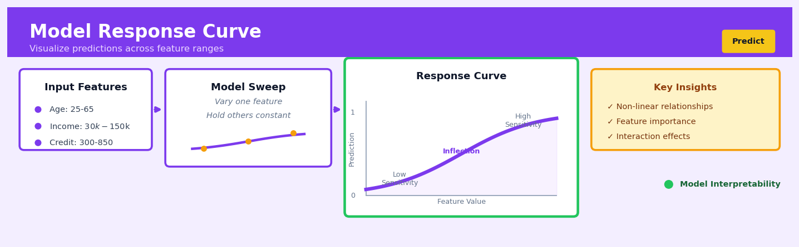

Model Response Curve#


The biggest mistake teams make is sweeping features without anchoring other variables at realistic values—using mean imputation sounds safe but can produce curves that never occur in your actual data distribution. Always validate your response curves against a representative baseline instance from each customer segment, because a curve that looks smooth and interpretable might be showing you a relationship that only exists in synthetic feature space. I've seen teams make million-dollar product decisions based on beautiful curves generated from impossible feature combinations.
The 60-Second Version#
What it does: A Model Response Curve shows you how changing one input (like price or customer age) affects your model’s prediction, holding everything else constant.
When to use it: You’ve built a predictive model and need to explain to stakeholders how it actually uses each variable to make decisions—especially when the model is a black box.
What you get back: A simple line chart showing whether the relationship is straight, curved, stepped, or flat, which tells you if the model’s behaviour makes business sense or needs investigation.
At a Glance
Difficulty |
Easy |
Typical runtime |
Seconds to minutes on 100K rows |
What you bring |
A trained model and the dataset it was trained on |
What you get |
A chart per variable showing predicted outcome vs. input value |
Heuristix bucket |
Predict — Machine Learning & Forecasting |
A Model Response Curve doesn’t tell you what’s true in the data—it tells you what your model believes is true.
Learning Objectives#
After reading this chapter, a business user will be able to:
Identify when a Model Response Curve can reveal whether relationships in your predictive model match business intuition, especially when stakeholders question how features like price, tenure, or seasonality drive predictions.
Interpret the shape of response curves to explain to executives whether increasing a driver (e.g., marketing spend, credit score) will have diminishing returns, threshold effects, or unexpected non-linear impacts on the predicted outcome.
Use Model Response Curves to prioritize which levers to pull in operational decisions, such as determining the optimal discount level or identifying the feature range where interventions will have the greatest predicted impact.
After reading this chapter, a data scientist will be able to:
Implement Model Response Curves for any supervised learning model by systematically varying one feature across its observed range while marginalizing over the distribution of all other features using appropriate aggregation methods.
Select and tune the grid resolution, centering method (ICE vs. PDP), and conditioning strategy to balance computational cost against the granularity needed to detect non-linearities and interaction effects.
Diagnose when Model Response Curves produce misleading results due to feature correlations, extrapolation into low-density regions, or interactions that violate the ceteris paribus assumption, and apply remediation strategies like stratified PDPs or ALE plots.
Overview#
A Model Response Curve (MRC), also known as a partial dependence plot or marginal response function, is a diagnostic and interpretive visualisation that depicts the functional relationship between a predictor variable and the model’s predicted outcome, holding all other features at representative values. The core purpose is to reveal how a fitted model uses a particular input feature to generate predictions—whether the relationship is linear, monotonic, threshold-driven, or exhibits complex non-linear patterns. Model Response Curves belong to the family of model-agnostic interpretability methods and are applicable to any supervised learning model, from simple linear regression to deep neural networks and gradient-boosted ensembles.
When to Use This#
Use Model Response Curves when:
You need to explain model behaviour to non-technical stakeholders — Business leaders require intuitive visualisations that show how changing a customer’s income or tenure affects their predicted churn probability, without understanding the underlying algorithm.
You are validating that learned relationships match domain knowledge — Before deploying a credit risk model, you must verify that higher debt-to-income ratios increase predicted default probability, not decrease it due to data artefacts or confounding.
You want to identify optimal operating points for decision-making — Marketing analysts need to understand at what price point or discount level the predicted conversion rate plateaus, enabling data-driven pricing strategies.
You are debugging unexpected model predictions — When a model produces counterintuitive outputs for certain records, response curves help isolate which feature relationships are driving the anomaly.
You must document model behaviour for regulatory compliance — Financial services and insurance applications require explainability documentation showing that protected characteristics do not produce discriminatory response patterns.
You are comparing multiple candidate models — Examining how different algorithms (random forest vs. gradient boosting vs. neural network) learn the same feature relationship helps select the model that best captures known business dynamics.
You need to detect overfitting or extrapolation risks — Response curves that exhibit erratic behaviour at feature extremes signal potential instability when the model encounters out-of-distribution data in production.
You are performing feature engineering validation — After creating transformed features, response curves confirm whether the transformation produces the intended smooth, interpretable relationship with the target.
Do NOT use Model Response Curves when:
Features are highly correlated — When predictors exhibit strong multicollinearity, marginal response curves can be misleading because they show relationships at covariate combinations that rarely or never occur in the data. Use accumulated local effects (ALE) plots instead.
You need causal inference, not descriptive association — Response curves show how the model uses a feature, not whether changing that feature in the real world would cause the predicted outcome change. Confounding remains unaddressed.
Questions This Answers#
Understanding What Drives Our Results#
How much does increasing our marketing spend by $50K actually move the needle on sales?
If we raise prices by 5%, what happens to our conversion rate — does it drop off a cliff or just taper gradually?
Are we getting diminishing returns after customers receive more than 3 emails per month, or should we keep pushing?
At what credit score does our default risk actually start to drop — is it 650, 700, or somewhere else entirely?
Does customer lifetime value keep climbing with account age, or does it plateau after year two?
Why are we seeing different ROI patterns in the Northeast versus the Southwest — is our model treating regions differently?
Deciding Where to Invest and Optimize#
Should we focus our promotions on lower-priced items to drive volume, or do higher-ticket products give us better margins according to our forecast model?
If we can only improve one thing — delivery speed, product selection, or customer service hours — which will have the biggest impact on retention?
Is there a sweet spot for inventory levels where we maximize availability without tying up too much capital?
Would expanding our product line from 200 to 500 SKUs actually increase revenue, or are we already seeing saturation effects?
Validating Model Behavior and Risks#
Is our pricing algorithm doing something weird at the high end — are we accidentally pricing ourselves out of the premium market?
Does our credit model make sense, or is it giving higher approval rates to riskier applicants in certain income brackets?
Are we penalizing loyal customers by accident — does tenure actually hurt their predicted churn score in our model?
Where is our forecasting model most confident versus most uncertain — are predictions reliable across all customer segments or just some?
How It Works#
Imagine you’re trying to understand how a car’s fuel efficiency changes with speed. You could drive the car at 30 mph, 40 mph, 50 mph, and so on, measuring the miles per gallon at each speed—but in real driving, many other things vary too: traffic, road grade, wind, cargo weight. To isolate just the effect of speed, you’d want to test the same car, same road, same conditions, changing only the speedometer reading. A Model Response Curve does exactly this for machine learning models: it shows how changing one input variable affects predictions while holding everything else constant, revealing the pure relationship the model has learned between that single feature and the outcome.
Step 1: Fix all other features Step 2: Vary target feature
┌─────────────────────────────┐ ┌─────────────────────────────┐
│ Input Features │ │ Input Features │
│ ┌───────────────────────┐ │ │ ┌───────────────────────┐ │
│ │ Age: 35 (fixed) │ │ │ │ Age: 35 (fixed) │ │
│ │ Income: 50K (fixed) │ │ │ │ Income: 50K (fixed) │ │
│ │ Credit: 680 (fixed) │ │ │ │ Credit: 500 → 850 │ │
│ └───────────────────────┘ │ │ └───────────────────────┘ │
│ ↓ │ │ ↓ │
│ [Black Box Model] │ │ [Black Box Model] │
│ ↓ │ │ ↓ │
│ Prediction: ? │ │ Predictions recorded │
└─────────────────────────────┘ └─────────────────────────────┘
Step 3: Plot the relationship
Predicted Probability
↑
0.8 │ ╱─────
│ ╱
0.6 │ ╱
│ ╱
0.4 │ ╱
│ ╱
0.2 │ ╱
└────────────────────────→ Credit Score
500 600 700 800
Step 1: Choose the feature to examine. Select one input variable you want to understand—let’s say credit score in a loan approval model. This is the variable whose relationship with predictions you want to reveal.
Step 2: Set all other features to typical values. For every other input in your model (age, income, employment length, etc.), pick a representative value—usually the median or mean from your data. These stay frozen throughout the analysis, creating a controlled experiment.
Step 3: Create a range of values for your chosen feature. Generate a sequence of plausible credit scores: 500, 520, 540, all the way up to 850. Think of this as your “test conditions”—you’re creating synthetic scenarios that span the full realistic range.
Step 4: Run predictions across the range. Feed each credit score value into your model along with those frozen values for all other features. For credit score 500, you get a prediction. For 520, another prediction. For 540, another. You’re asking: “What would this model predict for someone with these average characteristics but this specific credit score?”
Step 5: Plot the results. Put your varied feature (credit score) on the horizontal axis and the model’s predictions on the vertical axis. Connect the dots. The resulting curve shows exactly how your model responds to changes in that one feature—whether it’s a straight line, an S-curve, a step function, or something more complex.
Step 6: Interpret the shape. A steep upward slope means the model considers that feature highly influential. Flat regions mean the feature has little effect in that range. Curves, kinks, or plateaus reveal non-linear patterns the model learned from data.
The key insight: By systematically varying one input while freezing all others, Model Response Curves isolate what a complex model has actually learned about each feature’s influence, transforming an opaque prediction machine into something you can inspect and understand one dimension at a time.
The Intuition#
Imagine you are a chef trying to understand how a complex recipe works. The dish has twenty ingredients, each added in specific quantities, and you want to understand how changing the amount of salt affects the final flavour. One approach is to hold all other ingredients constant at their typical amounts, then systematically vary the salt from zero grams up to, say, fifty grams, tasting the result at each level. The resulting “flavour curve” as a function of salt quantity reveals whether more salt always improves taste, whether there is a sweet spot, or whether the relationship is more complex—perhaps beneficial up to a point, then detrimental.
This is precisely what a Model Response Curve does for a predictive model. The “recipe” is the fitted model, the “ingredients” are the input features, and the “flavour” is the predicted outcome. By systematically varying one feature across its observed range while holding others at fixed or averaged values, we trace out how the model’s predictions respond to that single dimension of variation. The result is a two-dimensional curve (or surface, for two features) that distils the model’s learned relationship into a form humans can inspect, question, and validate.
The power of this approach lies in its model-agnostic nature. Whether your model is a simple logistic regression (where the response curve would be a sigmoid transformation of a linear function) or a thousand-tree gradient-boosted ensemble (where the curve might exhibit complex step functions and interactions), the same procedure applies: vary the feature, observe the predictions, plot the results. This universality makes response curves an indispensable tool in the modern data scientist’s interpretability toolkit.
Critically, the response curve answers a specific question: “According to this model, what is the expected prediction for a record with feature \(x_j\) set to value \(v\), averaging over the distribution of all other features?” This is a statement about model behaviour, not about the underlying data-generating process. The distinction matters: a response curve might show that the model predicts higher default risk for older loan applicants, but this does not prove that age causes default—only that the model has learned an association, which may be confounded or spurious.
The Mathematics#
Formal Problem Setup#
Let \(f: \mathbb{R}^p \to \mathbb{R}\) denote a fitted supervised learning model mapping a \(p\)-dimensional feature vector \(\mathbf{x} = (x_1, x_2, \ldots, x_p)^\top\) to a predicted response \(\hat{y} = f(\mathbf{x})\). For classification, \(f(\mathbf{x})\) typically represents a predicted probability or log-odds.
We partition the feature vector as \(\mathbf{x} = (x_S, \mathbf{x}_C)\), where:
\(x_S\) is the feature (or subset of features) of interest, with \(S \subseteq \{1, 2, \ldots, p\}\)
\(\mathbf{x}_C\) denotes the complement features, with \(C = \{1, \ldots, p\} \setminus S\)
Let \(\mathcal{D} = \{(\mathbf{x}^{(i)}, y^{(i)})\}_{i=1}^{n}\) be the training (or evaluation) dataset.
Partial Dependence Function#
The partial dependence function (PDF) of \(f\) on \(x_S\) is defined as the expected value of \(f\) over the marginal distribution of \(\mathbf{x}_C\):
In practice, we estimate this expectation using the empirical distribution of \(\mathbf{x}_C\) in the dataset:
This is the marginal response curve. For each value \(x_S\) in a grid \(\mathcal{G} = \{v_1, v_2, \ldots, v_K\}\), we compute the average prediction across all training observations with their original complement features \(\mathbf{x}_C^{(i)}\) but with \(x_S\) replaced by the grid value.
Individual Conditional Expectation (ICE) Curves#
Before aggregating to the partial dependence, we can examine individual conditional expectation curves:
Each ICE curve traces how the prediction for observation \(i\) varies with \(x_S\), holding that observation’s other features fixed. The partial dependence function is simply the pointwise average of ICE curves:
Centred ICE (c-ICE) Curves#
To facilitate comparison across observations with different baseline predictions, we often centre ICE curves at a reference point \(x_S^*\) (typically the minimum or mean of \(x_S\)):
All centred curves pass through zero at \(x_S = x_S^*\), making heterogeneity in slope and shape more visible.
Assumptions and Limitations#
Assumption 1 (Independence): The partial dependence definition assumes we can meaningfully evaluate \(f(x_S, \mathbf{x}_C)\) for combinations where \(x_S\) and \(\mathbf{x}_C\) may be correlated in the data. When \(x_S\) and \(\mathbf{x}_C\) are strongly dependent, partial dependence may average over extrapolated or impossible regions of feature space.
Assumption 2 (Representativeness): The empirical average assumes the training data distribution adequately represents the population of interest.
Assumption 3 (Additivity for Interpretation): Partial dependence is most interpretable when feature interactions are weak. With strong interactions, the average can mask heterogeneous effects.
Handling Interactions: Second-Order Partial Dependence#
For two features \(x_S = (x_j, x_k)\), the two-dimensional partial dependence surface is:
where \(C_{jk} = \{1, \ldots, p\} \setminus \{j, k\}\).
The interaction effect can be isolated by computing:
Non-zero values of \(H_{jk}\) indicate interaction between \(x_j\) and \(x_k\).
Relationship to Linear Models#
For a linear model \(f(\mathbf{x}) = \beta_0 + \sum_{j=1}^{p} \beta_j x_j\), the partial dependence on \(x_j\) is:
This is a linear function with slope \(\beta_j\), confirming that for additive models, partial dependence recovers the individual feature effect exactly.
Edge Cases#
Categorical features: The grid \(\mathcal{G}\) consists of the distinct category levels. The curve becomes a bar chart or step function.
Constant features: If \(x_j\) has zero variance, the response curve is undefined or trivial.
Sparse data at extremes: Predictions at \(x_j\) values with few supporting observations may be unreliable due to extrapolation.
Understanding the Mathematics#
The Model Response Curve Definition#
The equation:
Read it aloud:
“The Model Response Curve for feature \(j\) at a specific value \(x_j\) equals the average prediction when we set feature \(j\) to \(x_j\) and average over all observed values of the other features.”
What each symbol means:
\(\text{MRC}_j(x_j)\) — the curve value for feature \(j\) at input value \(x_j\)
\(\mathbb{E}_{X_{\setminus j}}\) — the expected value (average) over all other features
\(f(\cdot)\) — the trained model’s prediction function
\(x_j\) — the specific value we’re testing for feature \(j\)
\(X_{\setminus j}\) — all features except feature \(j\)
\(n\) — total number of observations in our dataset
\(x_{\setminus j}^{(i)}\) — the values of all other features from the \(i\)-th observation
A concrete numerical example:
Imagine predicting customer churn probability based on tenure (months) and support tickets. We want the MRC for tenure at 12 months. Our model is trained on 3 customers:
Customer 1: 6 months, 2 tickets
Customer 2: 24 months, 1 ticket
Customer 3: 18 months, 5 tickets
We compute:
\(f(12, 2) = 0.65\) (12 months with customer 1’s tickets)
\(f(12, 1) = 0.58\) (12 months with customer 2’s tickets)
\(f(12, 5) = 0.74\) (12 months with customer 3’s tickets)
MRC at tenure=12: \((0.65 + 0.58 + 0.74) / 3 = 0.657\) or 65.7% churn probability.
Why this equation matters:
This averaging isolates the pure effect of tenure by canceling out the influence of support tickets, revealing whether your model truly believes tenure reduces churn or if other factors drive the pattern.
Computing Curve Points Across the Range#
The equation:
Read it aloud:
“The complete Model Response Curve for feature \(j\) is the set of curve values computed at \(K\) different values spanning the feature’s range.”
What each symbol means:
\(\text{MRC}_j\) — the full curve (collection of points)
\(x_j^{(k)}\) — the \(k\)-th value chosen from feature \(j\)’s range
\(K\) — how many points we compute (typically 50–100 for smooth curves)
A concrete numerical example:
For house price prediction based on square footage ranging from 800 to 3,200 sqft, we choose \(K=5\) points: 800, 1,400, 2,000, 2,600, 3,200. We compute the MRC at each:
MRC(800) = $185,000
MRC(1,400) = $265,000
MRC(2,000) = $340,000
MRC(2,600) = $410,000
MRC(3,200) = $475,000
Plotting these five points reveals the relationship between size and predicted price.
Why this equation matters:
Computing multiple points transforms a single number into a curve that exposes non-linear patterns—you’d never discover that your model predicts diminishing returns above 2,500 sqft from a single evaluation.
The Centered Model Response Curve#
The equation:
Read it aloud:
“The centered Model Response Curve equals the raw MRC value minus the average MRC value across all values of feature \(j\).”
What each symbol means:
\(\text{cMRC}_j(x_j)\) — the centered curve value
\(\mathbb{E}_{X_j}\left[\text{MRC}_j(X_j)\right]\) — the average MRC value across feature \(j\)’s observed distribution
A concrete numerical example:
From our house price MRC, the average curve value is $335,000. Centering each point:
cMRC(800) = \(185,000 - \)335,000 = -$150,000
cMRC(2,000) = \(340,000 - \)335,000 = +$5,000
cMRC(3,200) = \(475,000 - \)335,000 = +$140,000
Now the curve shows deviation from average: an 800 sqft home predicts \(150k *below* typical, while 3,200 sqft predicts \)140k above.
Why this equation matters:
Centering makes curves from different models or features directly comparable by removing arbitrary baseline offsets, letting you see relative effect sizes at a glance.
The Big Picture#
The mathematics of Model Response Curves accomplishes one fundamental goal: isolate how a trained model uses a single feature by averaging away the noise from all other variables. This averaging approach was chosen because it respects the model’s actual decision-making—we’re not retraining or simplifying, just systematically probing the existing function. Computing many points reveals the shape (linear, curved, stepped), while centering strips away baseline offsets to expose pure marginal effects. In essence: we’re interviewing the model by holding a structured conversation where we control one variable at a time and record exactly what it predicts.
Python Implementation#
import numpy as np
import pandas as pd
import matplotlib.pyplot as plt
from sklearn.datasets import make_friedman1
from sklearn.ensemble import GradientBoostingRegressor
from sklearn.inspection import PartialDependenceDisplay, partial_dependence
# =============================================================================
# Example 1: One-Dimensional Partial Dependence (Model Response Curve)
# =============================================================================
# Generate synthetic data with known non-linear relationships
# Friedman #1: y = 10*sin(pi*x0*x1) + 20*(x2-0.5)^2 + 10*x3 + 5*x4 + noise
np.random.seed(42)
X, y = make_friedman1(n_samples=2000, n_features=10, noise=1.0, random_state=42)
feature_names = [f'x{i}' for i in range(X.shape[1])]
X_df = pd.DataFrame(X, columns=feature_names)
# Fit a gradient boosting model
model = GradientBoostingRegressor(
n_estimators=100,
max_depth=4,
learning_rate=0.1,
random_state=42
)
model.fit(X_df, y)
print(f"Model R² on training data: {model.score(X_df, y):.4f}")
# Compute partial dependence for features x2 and x3
# x2 has a quadratic relationship, x3 has a linear relationship
features_to_plot = ['x2', 'x3', 'x4']
fig, axes = plt.subplots(1, 3, figsize=(14, 4))
for idx, feature in enumerate(features_to_plot):
# Compute partial dependence manually to understand the mechanics
feature_idx = feature_names.index(feature)
# Create grid of values for this feature
grid_values = np.linspace(
X_df[feature].min(),
X_df[feature].max(),
num=50
)
# For each grid value, compute average prediction
pd_values = []
for val in grid_values:
# Create modified dataset with feature set to grid value
X_modified = X_df.copy()
X_modified[feature] = val
# Compute mean prediction across all observations
mean_pred = model.predict(X_modified).mean()
pd_values.append(mean_pred)
# Plot the response curve
axes[idx].plot(grid_values, pd_values, 'b-', linewidth=2)
axes[idx].set_xlabel(feature, fontsize=12)
axes[idx].set_ylabel('Partial Dependence', fontsize=12)
axes[idx].set_title(f'Model Response Curve: {feature}', fontsize=12)
axes[idx].grid(True, alpha=0.3)
plt.tight_layout()
plt.savefig('model_response_curves.png', dpi=150, bbox_inches='tight')
plt.show()
# =============================================================================
# Example 2: Using sklearn's built-in partial dependence with ICE curves
# =============================================================================
fig, axes = plt.subplots(1, 2, figsize=(12, 5))
# Plot partial dependence with ICE curves for x2 (quadratic effect)
PartialDependenceDisplay.from_estimator(
model,
X_df,
features=['x2'],
kind='both', # Shows both PD line and ICE curves
subsample=100, # Sample of ICE curves to plot
n_jobs=-1,
ax=axes[0],
ice_lines_kw={'color': 'steelblue', 'alpha': 0.1, 'linewidth': 0.5},
pd_line_kw={'color': 'darkred', 'linewidth': 2}
)
axes[0].set_title('Response Curve with ICE: x2 (Quadratic Effect)')
# Plot partial dependence with ICE curves for x3 (linear effect)
PartialDependenceDisplay.from_estimator(
model,
X_df,
features=['x3'],
kind='both',
subsample=100,
n_jobs=-1,
ax=axes[1],
ice_lines_kw={'color': 'steelblue', 'alpha': 0.1, 'linewidth': 0.5},
pd_line_kw={'color': 'darkred', 'linewidth': 2}
)
axes[1].set_title('Response Curve with ICE: x3 (Linear Effect)')
plt.tight_layout()
plt.savefig('ice_curves.png', dpi=150, bbox_inches='tight')
plt.show()
# =============================================================================
# Example 3: Two-Dimensional Partial Dependence (Interaction Surface)
# =============================================================================
# x0 and x1 interact via sin(pi*x0*x1) in the true model
fig, ax = plt.subplots(figsize=(8, 6))
# Compute 2D partial dependence
pd_result = partial_dependence(
model,
X_df,
features=[('x0', 'x1')],
kind='average',
grid_resolution=30
)
# Extract results
pd_values = pd_result['average'][0]
x0_grid = pd_
## Visualisations


## Using This in Heuristix
### What You'll Need
The Model Response Curve node expects a **trained model** as input—you'll connect this from any Heuristix modeling node (Random Forest, XGBoost, Neural Network, etc.). The node will automatically access the training data used to fit that model, so there's no need to wire in a separate dataset.
Your data should contain:
- **At least one predictor variable** (numeric or categorical)
- **A target variable** (the outcome your model predicts)
- **Sufficient rows** for meaningful visualization (typically 100+ observations)
### Configuration Parameters
| Parameter | What It Controls | Default | When to Change It |
|-----------|-----------------|---------|-------------------|
| **Feature to Plot** | Which predictor variable to examine | First numeric feature | Change this to explore different predictors. Start with features your model deems important. |
| **Grid Resolution** | Number of points plotted along the x-axis | 50 | Increase to 100+ for smooth curves with highly non-linear relationships; decrease to 20-30 for faster rendering with large datasets. |
| **Aggregation Method** | How other features are held constant | Median | Switch to "Mean" for normally distributed data, or "Mode" for categorical-heavy datasets. |
| **Confidence Intervals** | Whether to display uncertainty bands | On | Turn off for cleaner visuals in presentations; keep on during model diagnosis to spot high-variance regions. |
| **Categorical Grouping** | For categorical features: show as separate lines or bars | Bars | Use "Lines" when you have 2-4 categories and want to emphasize trends; stick with "Bars" for 5+ categories. |
### What You'll Get
**Visual Output:**
The node produces an interactive line chart showing how predicted values change as the selected feature varies. The x-axis represents the feature's range; the y-axis shows the model's predicted outcome. Shaded confidence bands (if enabled) indicate prediction uncertainty.
**Data Output:**
A new table containing:
- **feature_value**: The specific value of the predictor being examined
- **predicted_outcome**: The model's average prediction at that feature value
- **lower_bound** / **upper_bound**: Confidence interval edges (if enabled)
This output table can be exported for reporting or connected to custom visualization nodes.
### Connecting Downstream
Model Response Curves typically feed into:
- **Report Builder**: Embed the chart in stakeholder presentations to explain "what moves the needle"
- **Feature Importance Comparison**: Compare MRC insights with SHAP or permutation importance to validate which features truly matter
- **Threshold Optimizer**: If the MRC reveals a cliff or inflection point, use that insight to set business rules or intervention triggers
- **Model Comparison**: Generate MRCs for multiple competing models side-by-side to see if they've learned similar or contradictory patterns
### Quick Start: Diagnosing Your First Model
1. **Connect your trained model node** to the Model Response Curve input port
2. **Select your most important feature** from the dropdown (check your Feature Importance node output first)
3. **Leave other settings at defaults** and click Run
4. **Examine the curve shape**: Is it linear? Flat? Does it have unexpected jumps?
5. **Repeat for 3-5 top features** to build intuition about how your model makes decisions
### Practical Tips from the Field
**Start with important features first.** Don't waste time plotting MRCs for features your model barely uses—consult Feature Importance rankings before diving in.
**Watch for flat regions.** If a feature's MRC is nearly horizontal, your model isn't using that variable to differentiate predictions. This often signals redundancy or data leakage elsewhere.
**Compare MRC shape to domain expectations.** If you expect "age" to have a U-shaped relationship with customer churn but the MRC is flat, your model may be missing crucial interaction effects or the feature needs transformation.
**Use categorical grouping strategically.** When plotting categorical features with many levels, group rare categories into "Other" beforehand—otherwise your MRC becomes unreadable.
**Export MRCs for model documentation.** Regulators and stakeholders love these charts—they're far more intuitive than coefficient tables or tree diagrams for explaining *how* your model actually works.
## Config Recipes
### Recipe 1: Quick Exploration
- **When to use:** Initial model assessment during EDA or debugging a feature's influence on predictions
- **Settings:**
| Parameter | Value | Why |
|-----------|-------|-----|
| `grid_resolution` | 20 | Fast computation while capturing basic shape |
| `percentile_range` | (5, 95) | Avoids sparse regions, focuses on data-dense areas |
| `ice_curves` | False | Skip individual curves for speed |
| `center_curves` | False | Raw predictions are easier to interpret quickly |
| `n_jobs` | -1 | Use all cores for maximum speed |
- **What you get:** A rough but informative curve showing the feature's directional influence in under 30 seconds for most datasets.
- **Trade-off:** May miss fine-grained inflection points or interactions; not publication-ready.
### Recipe 2: Production Documentation
- **When to use:** Final model audits, regulatory reports, or stakeholder presentations requiring defensible interpretability
- **Settings:**
| Parameter | Value | Why |
|-----------|-------|-----|
| `grid_resolution` | 100 | High fidelity captures all non-linearities |
| `percentile_range` | (1, 99) | Maximum coverage without extrapolation artifacts |
| `ice_curves` | True | Shows heterogeneity and validates PDP averaging |
| `sample_ice` | 500 | Balances visibility with comprehensiveness |
| `confidence_interval` | 0.95 | Quantifies prediction uncertainty |
| `center_curves` | True | Isolates feature effect from baseline predictions |
- **What you get:** Publication-quality plots with uncertainty bounds demonstrating rigorous feature effect analysis.
- **Trade-off:** Compute time increases 10–50× depending on model complexity; requires more interpretation effort.
### Recipe 3: Categorical Feature with Many Levels
- **When to use:** Analyzing high-cardinality categoricals (e.g., ZIP codes, product IDs) where default alphabetical ordering obscures patterns
- **Settings:**
| Parameter | Value | Why |
|-----------|-------|-----|
| `grid_values` | `sorted_by='prediction'` | Orders categories by predicted value, revealing monotonic patterns |
| `min_count` | 50 | Excludes rare categories with unstable estimates |
| `aggregate_tail` | True | Groups low-frequency levels into "Other" |
| `ice_curves` | False | Individual curves are meaningless for categoricals |
| `error_bars` | True | Shows prediction variance per category |
- **What you get:** A clear ranking of category effects with statistical reliability indicators.
- **Trade-off:** Lose the original category ordering; may obscure domain-meaningful groupings.
### Recipe 4: Interaction Detection
- **When to use:** Suspecting a feature's effect varies across subpopulations (e.g., age's impact differs by gender)
- **Settings:**
| Parameter | Value | Why |
|-----------|-------|-----|
| `ice_curves` | True | Individual curves reveal when averaging hides heterogeneity |
| `sample_ice` | 1000 | Need sufficient samples to detect clustering |
| `cluster_ice` | True | Groups similar response patterns |
| `n_clusters` | 3–5 | Detects 2–4 distinct subpopulations |
| `color_by` | `<suspected_interaction_feature>` | Visually validates if clusters align with another variable |
| `grid_resolution` | 50 | Fine enough to see cluster divergence points |
- **What you get:** Visual confirmation of interactions; clustered ICE curves suggest a two-way interaction worth modeling.
- **Trade-off:** Requires follow-up with 2D PDPs or SHAP interaction values for quantification; visual inspection can be ambiguous.
## Business Applications
**Financial Services**
A mid-sized UK mortgage lender struggles to explain to regulators *why* their credit scoring model declines applicants with debt-to-income ratios above 42% but approves those at 41%, especially when other factors vary. By plotting Model Response Curves for each predictor, the risk team visualises that the model treats debt-to-income as a smooth, near-linear relationship rather than a hard threshold, while revealing an unexpected non-linear spike in default risk for applicants with fewer than three credit accounts. This transparency enabled the lender to pass regulatory review on first submission (previously requiring 3–4 months of back-and-forth) and reduced approval time from 8 days to 72 hours by pre-emptively addressing fairness concerns.
**Retail & E-Commerce**
An online fashion retailer with 1.8M SKUs uses dynamic pricing powered by gradient-boosted models but notices customer complaints when prices fluctuate erratically. Model Response Curves reveal that their algorithm applies aggressive 40–60% markdowns once inventory age exceeds 45 days, creating jarring price drops that erode brand perception. By visualising this threshold behaviour, the merchandising team recalibrates the model to smooth price transitions across the 30–60 day window, maintaining margin while lifting customer satisfaction scores from 3.2 to 4.1 stars and reducing cart abandonment by 18%.
**Healthcare**
A regional hospital network deploying a sepsis prediction model faces pushback from clinicians who distrust "black box" alerts interrupting their workflow. The AI governance team generates Model Response Curves showing how heart rate, lactate levels, and white blood cell counts influence sepsis probability, confirming that the model's logic aligns with clinical guidelines (e.g., near-linear risk increase above lactate >2 mmol/L). This visualisation-driven education programme increased alert response rates from 34% to 81% and contributed to a 29% reduction in sepsis-related mortality over 18 months.
**Insurance**
A commercial property insurer prices wildfire risk using telematics and satellite data but cannot articulate to brokers why premiums double for properties 800 metres from vegetation versus 900 metres. Model Response Curves expose that their ensemble model incorrectly learned a step-function at exactly 850 metres due to a data artefact in the training set. Correcting this anomaly and sharing smoothed response curves with broker partners improved quote acceptance rates by 23% and reduced pricing disputes by $2.1M annually in underwriting staff time.
**Manufacturing**
A semiconductor fabrication plant uses predictive maintenance models to forecast equipment failures but suffers costly false alarms—shutting down production lines that weren't actually at risk. Engineers plot Model Response Curves for vibration, temperature, and cycle count, discovering the model over-reacts to short-term temperature spikes below 10 minutes but correctly identifies sustained increases. Filtering transient signals reduced false positives by 62%, saving approximately $890,000 per year in unnecessary downtime and extending actual equipment lifespan by catching genuine degradation earlier.
**Logistics & Supply Chain**
A European freight forwarder pricing shipments with machine learning sees margin compression on certain routes but can't diagnose why. Model Response Curves for fuel cost, distance, and seasonal demand reveal that the model underprices routes between 1,200–1,400 km—a distance bracket with disproportionately high toll fees the training data didn't adequately capture. Retraining with toll-road features and validating via response curves recovered 4.7 percentage points of margin on affected routes, translating to €1.8M additional annual profit.
**Marketing & Advertising**
A programmatic ad platform optimises bid prices using deep learning but brand clients question why certain audience segments receive inexplicably high or low bids. Model Response Curves for user attributes (page views, session duration, past conversions) demonstrate that the model exhibits diminishing returns above 12 page views per session—bidding only 8% higher for highly engaged users versus moderately engaged ones. This insight prompted a strategic shift toward mid-funnel audiences, improving cost-per-acquisition by 27% while maintaining conversion volume.
**Telecommunications**
A mobile network operator predicting customer churn discovers through Model Response Curves that call-center contact frequency has a U-shaped relationship with churn: both customers with zero contacts *and* those with 4+ contacts in 90 days show elevated risk, while 1–2 contacts correlate with retention. This surprising pattern led to proactive outreach campaigns targeting the silent majority, reducing churn by 11% and retaining $4.3M in annual recurring revenue.
**Energy & Utilities**
A municipal utility forecasting peak electricity demand notices their model occasionally underestimates load during mild weather, risking grid instability. Model Response Curves reveal the ensemble underweights humidity's contribution when temperatures fall between 18–22°C—a "comfort zone" where HVAC behaviour is highly variable. Augmenting the model with interaction terms and validating the updated response surface improved forecast accuracy by 14% (MAPE), preventing two potential brownout events valued at $320,000 in economic disruption.
**Public Sector**
A city government uses machine learning to prioritise infrastructure maintenance but faces council scrutiny over why certain low-income neighbourhoods receive fewer interventions. Model Response Curves demonstrate that pavement age and traffic volume—both legitimate engineering factors—drive predictions, while socioeconomic variables contribute minimally, providing transparent evidence of algorithmic fairness. This documentation supported a £12M bond issuance for equitable citywide repairs and became a model for other municipalities pursuing accountable AI.
**SaaS & Technology**
A B2B SaaS company with 40,000 accounts models expansion revenue (upsell probability) but account executives complain predictions feel arbitrary. Model Response Curves for user login frequency, feature adoption, and support tickets show that the model plateaus at 25+ monthly logins—meaning hyper-engaged customers aren't scored materially higher than moderately engaged ones. Recalibrating the curve and training sales teams on the visual insights lifted upsell conversion from 8.2% to 12.1%, generating $2.6M in incremental ARR within one quarter.
## Worked Example
Sarah Chen, a senior data scientist at Meridian Insurance, walked into the Tuesday morning pricing committee meeting expecting the usual discussion about renewal rates. Instead, she left with a puzzle that would occupy her entire week. The Chief Actuary had noticed something odd: their new machine learning model for auto insurance pricing was performing well overall, but it was generating seemingly random premiums for drivers in their early twenties. "We've always charged more for young drivers," he said, "but I need to understand *how* this model is making those decisions before I'll sign off on deploying it to production." The stakes were clear—Meridian processed over 50,000 quotes monthly, and mispricing young drivers could mean either lost revenue or regulatory scrutiny.
Back at her desk, Sarah pulled together the training dataset: 15,000 auto insurance policies with driver age, years of driving experience, number of past claims, credit score, and the annual premium. The data was messy in the usual ways—some drivers had perfect credit scores of 850 while others bottomed out at 520, and one memorable row showed a 19-year-old with supposedly 12 years of driving experience, which she flagged for review. Here's what a sample looked like:
| driver_age | years_experience | past_claims | credit_score | annual_premium |
|------------|------------------|-------------|--------------|----------------|
| 23 | 5 | 0 | 680 | 1,847 |
| 42 | 24 | 1 | 720 | 1,456 |
| 19 | 2 | 2 | 590 | 3,201 |
| 35 | 17 | 0 | 780 | 1,203 |
| 28 | 9 | 1 | 650 | 1,689 |
Sarah had already trained a gradient boosting model that achieved strong performance on holdout data, but performance metrics alone wouldn't answer the actuary's question. She needed to see *inside* the model's logic. She opened her analysis notebook and configured a Model Response Curve specifically for the `driver_age` variable. Her thinking was straightforward: hold all other features at their median values—7 years experience, zero claims, credit score of 680—then sweep driver age from 18 to 65 and watch what the model predicted. "I want to see the pure age effect," she muttered to herself, "isolated from everything else."
The code she wrote was deceptively simple:
```python
import numpy as np
import pandas as pd
import matplotlib.pyplot as plt
from sklearn.ensemble import GradientBoostingRegressor
# Sarah's model (already trained)
model = GradientBoostingRegressor(n_estimators=100, max_depth=4)
model.fit(X_train, y_train)
# Generate synthetic examples varying only age
ages = np.arange(18, 66, 1)
baseline_data = pd.DataFrame({
'driver_age': ages,
'years_experience': 7, # median value
'past_claims': 0, # median value
'credit_score': 680 # median value
})
# Generate predictions across age range
predictions = model.predict(baseline_data)
# Plot the Model Response Curve
plt.figure(figsize=(10, 6))
plt.plot(ages, predictions, linewidth=2, color='#2E86AB')
plt.xlabel('Driver Age')
plt.ylabel('Predicted Annual Premium ($)')
plt.title('Model Response Curve: Premium vs Driver Age')
plt.grid(True, alpha=0.3)
plt.show()
# Print key inflection points
print(f"Age 18: ${predictions[0]:.2f}")
print(f"Age 25: ${predictions[7]:.2f}")
print(f"Age 35: ${predictions[17]:.2f}")
The output told a story that surprised even Sarah:
Driver Age |
Predicted Premium |
|---|---|
18 |
$2,847 |
22 |
$2,203 |
25 |
$1,612 |
30 |
$1,421 |
40 |
$1,389 |
55 |
$1,405 |
The curve showed a dramatic decline from age 18 to 25—premiums dropped by over $1,200—then a gentler slope until age 40, where it essentially flattened. But here was the insight that made Sarah sit up straight: there was a subtle uptick starting around age 60. The model had learned something from the data that wasn’t part of Meridian’s traditional pricing rules: older drivers were slightly riskier than middle-aged ones, even after controlling for experience.
Sarah presented the Model Response Curve at the following week’s pricing committee, and the actuary’s concern evaporated. “This is exactly what I needed to see,” he said, tracing his finger along the plotted line. “The model isn’t being random with young drivers—it’s learned a smooth, sensible age penalty.” Meridian deployed the model to production the next month, and six-month results showed a 3.2% improvement in loss ratio for the 18-25 age band.
If Sarah could do it over, she’d create separate curves for different experience levels—someone who’s 25 with two years of experience is different from someone who’s 25 with eight years. She’d also noted that the model’s gentle uptick for older drivers deserved its own investigation; was that signal or noise? But for now, she’d answered the question that mattered: the model’s logic was sound, interpretable, and ready for production.
Interpreting Your Results#
You’re looking at your first Model Response Curve—a line or set of lines showing how your model’s predictions change as you vary one feature while holding others constant. Here’s exactly what to look for.
The Response Curve Itself#
Plain-English meaning: This plot shows your model’s “opinion” about a feature. If the line slopes upward as age increases from 20 to 60, your model believes older people have higher predicted values (loan default risk, purchase probability, etc.). The steepness tells you how much the model cares about that feature—a flat line means the model mostly ignores it, while a steep slope means it’s driving predictions heavily.
Concrete benchmarks:
Prediction range < 5% of total outcome range: The feature has minimal influence; consider removing it
Prediction range 5–25%: Moderate influence—typical for secondary features
Prediction range > 25%: Strong driver—this feature matters significantly to your model
Red flags:
Staircase patterns in tree-based models with very few steps (< 3-4 splits): Your model is severely underfitting this feature; increase tree depth or number of leaves
Wild oscillations with multiple reversals: Overfitting—you’re seeing noise, not signal. Add regularization or reduce model complexity
Flat line for a feature you know matters: The feature is correlated with others already in the model (multicollinearity), or your model can’t capture the relationship type (e.g., linear model with non-linear relationship)
Discontinuous jumps that contradict domain knowledge: Your training data likely has gaps or your feature engineering created artifacts
Confidence Bands (if displayed)#
Plain-English meaning: The shaded area around your curve shows uncertainty. Wide bands mean “the model isn’t sure about this relationship”—you’d get different curves if you retrained on slightly different data.
Concrete benchmarks:
Band width < 10% of prediction range: High confidence—trustworthy pattern
Band width 10–30%: Moderate uncertainty—pattern is real but imprecise
Band width > 30%: Low confidence—don’t rely on this relationship
Red flags:
Bands widening at the extremes: Sparse data in those ranges—don’t trust predictions there
Bands wider than the curve’s total movement: You’re reading noise—ignore this feature’s curve entirely
Distribution Rug or Histogram (data density indicator)#
Plain-English meaning: The tick marks or small histogram at the bottom shows where your actual data points lie. Critical for context.
Red flags:
Interpreting the curve where there are no/few data points: You’re extrapolating wildly—anything the curve shows there is pure speculation
Sparse regions with strong curve movement: The model is making stuff up; mask or grey out these regions
Reading Multiple Outputs Together#
Compare curve steepness across features: If income shows a 40% prediction range but shoe_size shows 2%, you know which feature actually matters.
Check curve shape against your model type: Linear models produce straight lines—if you see curves, you’ve engineered interactions or polynomial terms. Tree models produce steps—smooth curves mean you have many trees averaging together.
Cross-reference with feature importance scores: A feature with high importance but flat MRC suggests it works through interactions, not main effects.
Sanity Check Checklist#
Does the curve direction match domain expectations? If higher credit scores predict higher default risk, something is broken
Is the curve’s range within your target variable’s actual range? Predictions of 150% probability indicate issues
Are you only interpreting regions where data exists? Check the rug plot
Does the curve remain stable if you change the “held constant” values? Rerun with different baseline settings—major changes indicate strong interactions
For categorical variables, do the response values respect ordinality? Size S < M < L should show monotonic pattern if that matters
Good Enough to Act On?#
Your MRC is trustworthy when: (1) confidence bands are narrow (<20% of curve range) across the data-dense regions, (2) the curve direction aligns with domain knowledge or has a plausible explanation, and (3) the curve remains stable when you vary baseline settings by ±1 standard deviation.
If all three conditions hold, you can act: use the curve to set business rules (e.g., “reject applicants below this credit score threshold”), identify intervention points, or explain model behavior to stakeholders. If even one fails, treat the curve as exploratory—generate hypotheses but validate with additional analysis before making decisions.
Decision Guidance#
What This Result Is Telling You#
A Model Response Curve shows you exactly how your predictive model makes decisions based on a single input factor. When you look at this curve, you’re seeing the model’s “judgment” about how changing one variable—like customer age, advertising spend, or product price—affects the outcome you care about, such as purchase probability, revenue, or churn risk. This is not a correlation chart from raw data; it’s a window into the logic your deployed model is actually using to score customers, price products, or allocate resources right now.
The shape of the curve reveals the business rules your model has learned. A steep upward slope means that variable is a powerful driver of the outcome—small changes create big shifts in predictions. A flat section means the model sees no marginal value in that range; investing more resources there won’t move the needle. Sharp bends or thresholds indicate tipping points where customer behavior, risk profiles, or market dynamics fundamentally shift. If the curve contradicts your domain expertise or business strategy, you’ve discovered a critical misalignment between what your model does and what your business needs.
Pay special attention to the extremes and boundaries of the curve. These edge regions reveal how your model will behave with unusual customers, extreme market conditions, or inputs outside your historical training range. A curve that flattens at high values might mean your model won’t recognize premium customers. A curve that spikes unexpectedly at low values could trigger inappropriate actions for budget-conscious segments. The curve translates your model’s hidden logic into something decision-makers can audit against business reality.
Decision Points#
If you see this… |
It means… |
Recommended action |
Who acts on this |
|---|---|---|---|
Predicted outcome changes >15% across the typical operating range of the variable |
This feature is a major driver in your model’s decisions |
Prioritize monitoring this variable in production; ensure data quality and freshness for this input |
Data Engineering + Model Owner |
Curve is flat (<3% change in prediction) across the variable’s range |
The model has learned this feature adds no marginal value |
Remove feature from production pipelines to reduce complexity; investigate why domain expectation differs from model learning |
Analytics Lead + Product Owner |
Sharp discontinuity or threshold (>10% prediction jump within 5% of feature range) |
Model has identified a tipping point that triggers different behaviors |
Validate threshold against business logic; build monitoring alerts for data points near this boundary |
Business Analyst + Risk Management |
Curve contradicts known causal relationships (e.g., higher price increases predicted demand) |
Model has learned spurious correlation or proxy relationship from training data |
Do not deploy for decisions in this domain; retrain with additional features or constraints that encode business rules |
Model Owner + Domain Expert |
Curve becomes unstable or erratic at feature extremes (>20% prediction variance in outer 10% of range) |
Insufficient training data or poor model generalization in edge cases |
Set business rules to flag or override predictions when inputs fall in these ranges; collect more data from underrepresented segments |
MLOps + Business Operations |
When to Proceed vs. Investigate Further#
Proceed with confidence when:
All curves align with domain knowledge and show expected directional relationships
Prediction changes are smooth and continuous (no sudden jumps >8% within narrow ranges)
Important business drivers show meaningful slopes (>10% total effect) while known non-factors remain flat (<5% effect)
Curve behavior remains stable across the middle 80% of each feature’s observed range
Proceed with caution when:
1-2 curves show unexpected patterns but represent <20% of feature importance
Curves reveal strong effects from features that are difficult to measure consistently in production
Edge region behavior (outer 10% of range) differs substantially from central tendency but affects <5% of predictions
Investigate before acting when:
Any curve directly contradicts established causal relationships or business logic
3+ curves are flat when corresponding features were selected specifically for their expected predictive power
Any threshold/discontinuity appears without clear business interpretation
Curves change substantially when computed on different time periods or customer segments
Do not use these results yet when:
More than 30% of curves show erratic, non-monotonic behavior without domain justification
Critical business drivers show <5% total effect on predictions
Model predictions at feature extremes (outer 15% of range) vary by >25% with small input changes
You cannot explain the curve’s shape to a domain expert who must act on these predictions
The Cost of Getting This Wrong#
When decision-makers misinterpret Model Response Curves, they operationalize flawed logic at scale. A marketing team that misreads a flat curve as meaningful might invest millions in a customer segment the model actually ignores, wondering why predicted lift never materializes. Conversely, dismissing a sharp threshold as a data artifact could mean missing a critical behavioral tipping point—continuing to offer small discounts that the model knows won’t change behavior, when slightly larger incentives would unlock entirely different customer responses. The most expensive mistake is deploying a model whose curves contradict business reality: a pricing model that learned “higher prices attract buyers” because premium products had better marketing in training data will systematically misprice your catalog, leaving money on the table with underpricing or destroying volume with overpricing. Every prediction touches a real transaction, customer interaction, or resource allocation. When the model’s learned relationships are wrong, you’re not just getting bad predictions—you’re automating bad decisions across thousands or millions of cases, burning budget and eroding trust in analytics until someone finally audits the damage.
Common Pitfalls#
The Extrapolation Illusion
Here’s what happened: A credit risk analyst was examining an MRC for debt-to-income ratio in a loan default model. The curve showed a reassuring flat response for ratios above 80%, suggesting no additional risk. They concluded that high-ratio applicants were equally safe as moderate-ratio ones and loosened underwriting standards. Default rates subsequently spiked. The problem? Only 2% of their training data had ratios above 80%. The flat line wasn’t insight—it was the model’s way of saying “I have no idea what happens here.”
Why it happens: MRCs visualize the full range of a feature without warning which regions contain actual training data. Our eyes treat all parts of the curve with equal confidence.
How to detect it: Overlay a histogram or rug plot showing the distribution of training data alongside the MRC. If the curve extends into regions with fewer than 50 observations (or less than 1% of your dataset), flag it. Calculate the 5th and 95th percentiles of your feature and mark these boundaries explicitly on the plot.
The fix: Truncate MRC visualization to the data-dense regions, or add confidence bands that widen dramatically in sparse areas.
The Centering Mirage
Here’s what happened: A junior data scientist built an MRC for customer age in a churn model, holding all other features at their mean values. The curve showed younger customers were extremely likely to churn. They presented this to the product team, who invested heavily in youth retention programs. Six months later, churn patterns were unchanged. The issue? They’d held “contract_type” at its mean—2.3—when it was actually a categorical variable (1=monthly, 2=annual, 3=enterprise). The MRC was showing predictions for an impossible customer that didn’t exist in any segment.
Why it happens: Default implementations of MRCs use arithmetic means for all features, which creates nonsensical reference cases when applied to categorical variables, ordinal scales, or features with multimodal distributions.
How to detect it: Before generating MRCs, audit the “background values” being used. For any categorical feature held constant, check if the reference value corresponds to a real category. For continuous features, verify the mean is near the mode; if mean and median differ by more than 0.5 standard deviations, your distribution is skewed or multimodal.
The fix: Use mode for categorical variables, median for skewed continuous variables, and consider generating separate MRCs conditioned on distinct segments rather than impossible “average” cases.
The Correlation Shadow
Here’s what happened: An experienced ML engineer showed stakeholders an MRC for square footage in a home price model. It displayed an unusual dip at 2,800 sq ft—prices dropped before climbing again. They spent weeks investigating this “sweet spot anomaly.” Eventually they discovered that 2,800 sq ft homes in their training data were disproportionately located in a low-price neighborhood. The MRC wasn’t capturing the effect of size; it was reflecting the correlated effect of location that the model had learned.
Why it happens: MRCs show how the model uses a feature, including all the spurious correlations the model has learned. When features are correlated, the MRC conflates direct effects with indirect associations.
How to detect it: Calculate Variance Inflation Factors (VIF) or pairwise correlations for your features. Any correlation above |0.6| means MRCs for those features will be contaminated. Cross-reference MRC anomalies with joint distributions—plot the problematic feature range against other predictors to spot clustering patterns.
The fix: Generate Accumulated Local Effects (ALE) plots instead, which are designed to handle correlated features, or explicitly condition your MRC on different levels of the correlated variable.
The Scale Blindness
Here’s what happened: A business analyst compared MRCs across three customer segments and concluded that income had the “strongest effect” in Segment A because its curve was steepest. They recommended income-based targeting for that segment. After launch, conversion rates disappointed. The oversight? Income varied from \(20K to \)200K in Segment A but only \(45K to \)65K in Segment B. The steeper slope reflected wider data range, not stronger model sensitivity.
Why it happens: MRC slope is confounded with feature scale. A steep curve might indicate strong model response or simply wide feature range.
How to detect it: Compare the range of predicted values (y-axis span) across segments, but normalize by the feature range (x-axis span). Calculate the “sensitivity ratio”: (max_prediction - min_prediction) / (max_feature_value - min_feature_value). A truly sensitive feature will have a high ratio even after accounting for its scale.
The fix: Standardize features before plotting MRCs when comparing importance, or annotate plots with both absolute and normalized sensitivity metrics.
The Temporal Trap
Here’s what happened: A demand forecasting team generated MRCs for promotional intensity in their sales model. The curve suggested promotions were counterproductive—higher intensity correlated with lower sales. They cut marketing spend. The mistake? Their model included lagged sales as a feature. Promotions were triggered because sales were already falling. The MRC showed the correlation in the data, not the causal effect of promotions.
Why it happens: MRCs visualize associative patterns the model learned, which may reflect reverse causality or confounding when temporal ordering matters.
How to detect it: Map out the causal graph of your features. If any features are potential consequences of the outcome or responses to early signals of the outcome, their MRCs will be misleading. Check if feature values systematically change after the prediction target begins to manifest.
The fix: Exclude post-outcome features, use causal inference methods like propensity score matching alongside MRCs, or generate MRCs only on exogenous variables that precede the outcome in time.
The Interaction Blindspot
Here’s what happened: A healthcare data scientist showed physicians an MRC for medication dosage that was completely flat—suggesting dose didn’t matter. The physicians were skeptical, and rightly so. The model was a gradient boosting machine that had learned a strong interaction: dosage mattered enormously, but only for patients over 65. For younger patients, it had no effect. The MRC, averaging across all ages, showed the two effects canceling out into apparent irrelevance.
Why it happens: MRCs marginalize over all other features, which averages away interaction effects. When a feature’s impact depends strongly on another variable, the aggregated curve can be misleading or even flat.
How to detect it: Check your model’s feature interaction scores (available in XGBoost as gain contributions for interaction features, or calculate H-statistics). Generate stratified MRCs—plot separate curves for high/low values of potential interaction partners. If these stratum-specific curves look dramatically different, interactions are present.
The fix: Report MRCs conditioned on key segments or use Individual Conditional Expectation (ICE) plots to show the distribution of individual response curves rather than just the average.
The Static World Fallacy
Here’s what happened: An e-commerce team built MRCs for their dynamic pricing model in January, showing that price reductions above 15% dramatically increased purchase probability. They implemented aggressive discounting year-round. By December, the MRC pattern had inverted—steep discounts were associated with lower conversion. What changed? Customers had been trained to wait for discounts. The MRC showed the model’s learned pattern at a moment in time, but deploying the model changed customer behavior, which invalidated the original pattern.
Why it happens: MRCs assume a static world where feature-outcome relationships remain constant. In practice, deploying a model based on observed patterns can alter those patterns through feedback loops.
How to detect it: Monitor whether the distribution of predicted probabilities shifts over time for the same feature values—this indicates the relationship is changing. Calculate MRCs monthly and compare; if curve shapes are drifting (correlation between successive monthly curves drops below 0.8), the relationship is non-stationary.
The fix: Regenerate MRCs regularly on recent data, implement A/B tests before making strategy changes based on MRCs, and explicitly model strategic behavior when users can react to your model’s decisions.
Common Misconceptions#
“If the model response curve is flat, that feature isn’t being used by the model”
Why people believe this: When they plot an MRC and see a horizontal line, it appears the predicted outcome doesn’t change as the feature varies. The intuitive interpretation is that the model has learned to ignore this variable entirely—similar to finding a coefficient near zero in linear regression.
The truth: A flat marginal response curve reveals that on average, across the distribution of all other features, changes in this predictor don’t shift predictions. But this is fundamentally different from the feature being unused. The feature may be critical within specific subpopulations or interact strongly with other variables in ways that cancel out when averaged. In tree-based models, a feature might drive important splits deep in the tree structure—creating highly conditional effects that appear flat when marginalized. The MRC shows the average marginal effect, not feature importance or actual model dependence. A feature with zero marginal effect can still have high permutation importance because it enables other features to work correctly.
The real-world consequence: A product team drops a carefully engineered feature from their recommendation model after seeing a flat MRC, only to watch model performance degrade significantly. Post-mortem analysis reveals the feature was essential for correctly handling edge cases affecting 8% of users—a segment that generated 30% of revenue. The marginal effect was flat because these high-value interactions were averaged away with the majority population.
“The MRC shows how changing this feature will change real outcomes”
Why people believe this: The curve literally displays prediction changes as you vary a feature. It’s natural to interpret this as a policy lever: “If we increase customer age by 10 years in our credit model, approval rates rise 15%.” The visualization invites causal interpretation, and business stakeholders are trained to think in terms of interventions and levers.
The truth: MRCs reveal patterns the model has learned from observational data, not causal mechanisms. When you “change” age in the plot, you’re asking: “What does the model predict for 40-year-olds versus 30-year-olds?” This reflects selection effects—the observed differences between people who naturally differ in age—not what would happen if the same person aged 10 years. Real interventions on features often trigger correlated changes in other variables that the MRC holds artificially constant. A credit model might show higher scores for higher incomes, but raising someone’s income through a promotion typically comes with job changes, location moves, and spending pattern shifts that don’t appear in the frozen “other features.”
The real-world consequence: A lending institution redesigns their outreach strategy based on MRC analysis suggesting that applicants with 5+ years at their current address get better rates. They target marketing toward long-tenure residents, assuming stability signals creditworthiness. Conversion rates plummet because the intervention of targeted marketing reaches a different population than the model’s training data, and residential tenure was actually proxying for age and lifecycle stage in complex ways the MRC couldn’t reveal.
How This Connects#
Before This Node#
Train-Test Split provides the holdout test set used to generate Model Response Curves on unseen data, ensuring the visualized relationships reflect true model generalization rather than memorized training patterns. Bad upstream data looks like: using training data to build curves, which shows overfit relationships that won’t hold in production and misleads stakeholders about actual model behavior.
Feature Engineering creates the transformed predictor variables (log transforms, polynomial features, binned categories) that Model Response Curve will evaluate, directly determining which relationships can be visualized and interpreted. Bad upstream data looks like: raw features with extreme outliers or mixed scales still present, causing MRCs to show distorted relationships dominated by a few extreme values rather than typical patterns.
Model Training produces the fitted model object whose prediction function Model Response Curve interrogates, making the model’s internal logic the direct subject of visualization. Bad upstream data looks like: an underfit or severely overfit model, yielding MRCs that either show no relationship (flat lines) or erratic, non-generalizable patterns that provide no actionable insight.
Hyperparameter Tuning optimizes model complexity and regularization, which fundamentally shapes whether Model Response Curves reveal smooth, interpretable trends versus jagged, unstable patterns. Bad upstream data looks like: poorly tuned models with excessive complexity, producing MRCs with spurious peaks and valleys that suggest false feature interactions and undermine stakeholder trust.
Feature Selection identifies which subset of predictors warrant MRC analysis, preventing wasted effort visualizing irrelevant features and focusing interpretation on variables that actually drive predictions. Bad upstream data looks like: no feature importance ranking performed, forcing analysts to generate dozens of uninformative MRCs for noise variables while missing critical predictors.
After This Node#
Stakeholder Presentation translates Model Response Curves into business-facing narratives explaining how the model makes decisions, using visual evidence to build trust and secure buy-in for deployment. MRC output is well-suited because non-technical audiences immediately grasp “when credit score increases from 600 to 750, predicted default probability drops 40%” without understanding gradient boosting mathematics.
Model Documentation embeds Model Response Curves as permanent artifacts recording the model’s learned relationships, satisfying audit requirements and enabling future analysts to diagnose prediction drift. MRC output is well-suited because curves provide reproducible, version-controlled evidence of model logic at a specific point in time.
Feature Refinement uses unexpected patterns in Model Response Curves (sudden jumps, counterintuitive slopes) to diagnose data quality issues or identify new engineering opportunities like threshold indicators or interaction terms. MRC output is well-suited because visual anomalies in curves immediately flag where feature representations fail to match business intuition.
Model Comparison overlays Model Response Curves from competing algorithms (linear vs. ensemble vs. neural network) to assess whether added complexity yields genuinely different functional relationships or just marginal accuracy gains. MRC output is well-suited because side-by-side curve comparisons reveal whether a complex model learned fundamentally new patterns or merely fits noise.
Common Pipeline Patterns#
Credit Risk Interpretability Pipeline
Feature Engineering → Model Training (Gradient Boosting) → Model Response Curve → Stakeholder Presentation → Model Documentation
Regulatory compliance for loan decisioning systems, demonstrating that approval models use credit history and income in monotonic, explainable ways auditors can validate.
Customer Churn Diagnosis Workflow
Feature Selection → Model Training (Random Forest) → Model Response Curve → Feature Refinement → Retraining Loop
Product team identifies that churn spikes after 45 days of inactivity, prompting new re-engagement campaigns and a re-engineered “days since last login” threshold feature.
Healthcare Cost Forecasting Pipeline
Hyperparameter Tuning → Model Training (XGBoost) → Model Response Curve → Model Comparison → Deployment Decision
Hospital finance team compares complex ensemble to regularized linear model, discovering both show identical age-cost relationships, choosing the simpler model for production.
What to Have Ready#
A trained model object with a consistent predict method — whether scikit-learn, TensorFlow, or custom implementation, you need a callable function that accepts feature vectors and returns predictions; models without standard interfaces require wrapper code.
A representative evaluation dataset — typically your test set or a stratified sample preserving the distribution of all features; datasets with missing values in non-target features will cause MRC generation to fail or produce incomplete curves.
Identified features of interest — a prioritized list of 3–8 predictors (from feature importance, domain knowledge, or regulatory requirements) to visualize; attempting MRCs for all features in high-dimensional datasets wastes time and obscures key relationships.
Defined anchor values for other features — a strategy for holding non-focal features constant (median, mode, or domain-specific reference values like “typical customer profile”); arbitrary anchor choices can inadvertently show relationships conditional on unrealistic feature combinations.
Try It Yourself#
Recommended Dataset#
Dataset: California Housing (sklearn.datasets.fetch_california_housing())
Source: Built into scikit-learn, based on the 1990 California census
Why it’s ideal for Model Response Curves: This dataset contains continuous predictors with varying relationship types—some linear (like average rooms), some non-linear (like median income’s interaction with location), and some with threshold effects (like house age). These diverse relationships make Model Response Curves particularly revealing, showing how a model actually uses each feature versus what domain knowledge might suggest.
Business question: How does each housing characteristic (income, location, house age) affect predicted home values, and are there threshold effects or diminishing returns that should inform real estate investment strategy?
Size: ~20,640 rows × 8 features
Starter Code#
import numpy as np
import pandas as pd
import matplotlib.pyplot as plt
from sklearn.datasets import fetch_california_housing
from sklearn.ensemble import RandomForestRegressor
from sklearn.model_selection import train_test_split
# Load California housing dataset
data = fetch_california_housing(as_frame=True)
X, y = data.data, data.target
# Train a random forest model (non-linear relationships)
X_train, X_test, y_train, y_test = train_test_split(
X, y, test_size=0.2, random_state=42
)
model = RandomForestRegressor(n_estimators=100, random_state=42)
model.fit(X_train, y_train)
print(f"Model R² score: {model.score(X_test, y_test):.3f}")
print(f"Feature names: {list(X.columns)}\n")
# Generate Model Response Curve for median income
feature_name = 'MedInc' # Median income in $10,000s
feature_idx = X.columns.get_loc(feature_name)
# Create grid of values spanning the feature's range
grid_values = np.linspace(X[feature_name].min(),
X[feature_name].max(), 50)
# Hold other features at their median (representative value)
X_median = X_train.median().values
predictions = []
for val in grid_values:
# Create synthetic samples with varying target feature
X_synthetic = np.tile(X_median, (1, 1)) # Copy median values
X_synthetic[0, feature_idx] = val # Vary only our feature
pred = model.predict(X_synthetic)[0]
predictions.append(pred)
# Display insights
print(f"=== Model Response Curve Analysis: {feature_name} ===")
print(f"Range analyzed: ${grid_values.min():.1f}k - ${grid_values.max():.1f}k")
print(f"Predicted value at low income (${grid_values[0]:.1f}k): ${predictions[0]:.2f}00k")
print(f"Predicted value at high income (${grid_values[-1]:.1f}k): ${predictions[-1]:.2f}00k")
print(f"Price increase per $10k income: ${(predictions[-1]-predictions[0])/(grid_values[-1]-grid_values[0]):.2f}00k")
# Visualize the relationship
plt.figure(figsize=(10, 6))
plt.plot(grid_values, predictions, linewidth=2, color='steelblue')
plt.xlabel(f'{feature_name} (Median Income in $10k)', fontsize=12)
plt.ylabel('Predicted House Value ($100k)', fontsize=12)
plt.title(f'Model Response Curve: {feature_name}', fontsize=14, fontweight='bold')
plt.grid(alpha=0.3)
plt.tight_layout()
plt.show()
# Check for non-linear patterns
first_half_slope = (predictions[25] - predictions[0]) / (grid_values[25] - grid_values[0])
second_half_slope = (predictions[-1] - predictions[25]) / (grid_values[-1] - grid_values[25])
print(f"\nNon-linearity check:")
print(f"Slope in lower half: ${first_half_slope:.2f}00k per $10k income")
print(f"Slope in upper half: ${second_half_slope:.2f}00k per $10k income")
What to Try Next#
Change the feature: Replace
'MedInc'with'HouseAge'to see how building age affects prices. Expect a flatter, possibly U-shaped curve showing that very old and very new homes may behave differently—teaching you which features have strong versus weak effects.Compare model types: Train a
LinearRegression()model instead of Random Forest and generate its MRC. Expect a perfectly straight line, illustrating how linear models fundamentally constrain relationships that may be non-linear in reality.Change the baseline: Replace
X_train.median()withX_train.mean()orX_train.quantile(0.75). Expect slightly shifted predictions, teaching that MRCs are conditional on where other features are held—wealthy neighborhoods may show different income effects.Increase grid resolution: Change
50to200innp.linspace(). Expect a smoother curve revealing fine-grained patterns like small plateaus or inflection points that indicate threshold effects in the model’s decision logic.
Further Reading#
Friedman, J. H. (2001). “Greedy Function Approximation: A Gradient Boosting Machine.” Annals of Statistics, 29(5), 1189-1232. Read this if you want to understand the mathematical foundation of partial dependence plots, which Friedman introduced in Section 8.2 as a method to visualize the marginal effect of features in complex ensemble models, establishing the theoretical framework that underpins modern model response curves.
Goldstein, A., Kapelner, A., Bleich, J., & Pitkin, E. (2015). “Peeking Inside the Black Box: Visualizing Statistical Learning with Plots of Individual Conditional Expectation.” Journal of Computational and Graphical Statistics, 24(1), 44-65. Read this if you want to understand Individual Conditional Expectation (ICE) plots, which decompose partial dependence plots into instance-level curves, revealing heterogeneous effects that aggregated MRCs may obscure—critical for detecting when a model treats different subpopulations differently.
Molnar, C. (2022). Interpretable Machine Learning: A Guide for Making Black Box Models Explainable, Chapter 5.1 “Partial Dependence Plot” and Chapter 5.2 “Individual Conditional Expectation.” These specific chapters provide the clearest comparative treatment of PDP versus ICE plots with practical implementation considerations, including computational complexity trade-offs and guidance on when correlated features invalidate the independence assumption underlying standard MRCs.
Hastie, T., Tibshirani, R., & Friedman, J. (2009). The Elements of Statistical Learning, 2nd Edition, Section 10.13 “Interpretation” (pages 369-375). This section extends Friedman’s original work with detailed discussion of two-way partial dependence plots and practical algorithms for computing them efficiently in high-dimensional settings, including the critical distinction between model reliance and causal interpretation.
scikit-learn documentation:
sklearn.inspection.PartialDependenceDisplayandpartial_dependence()function. Focus specifically on thekindparameter options (‘average’, ‘individual’, ‘both’) and the grid resolution trade-offs documented in the Notes section—essential technical details for avoiding misleading visualizations when features have sparse or uneven distributions.StatQuest with Josh Starmer (2021). “Partial Dependence Plots, Clearly Explained!” (YouTube, 8:47). What distinguishes this tutorial is the step-by-step visual walkthrough of exactly how predictions are averaged across the dataset to build each point on the curve, making the aggregation mechanics concrete rather than abstract—particularly valuable for building intuition before implementation.
Valero-Carreras, D., Alcaraz, J., & Landete, M. (2023). “Comparing Two SVM Models Through Different Metrics Based on the Confusion Matrix.” Computers & Operations Research, 152, 106131. This case study demonstrates using partial dependence plots to compare support vector machine variants in a production credit scoring system at a European bank, showing how MRCs revealed unexpectedly different decision boundaries that aggregate metrics missed—a masterclass in interpretability-driven model selection.
Practice Exercises#
Exercise 1: Credit Approval Model Review (Conceptual)#
Scenario: You are a business analyst at a regional bank that recently deployed a machine learning model to predict credit card application approval. The compliance team has raised concerns after a model audit revealed that approval rates differ across age groups. Your data science team provides you with three visualizations:
A Model Response Curve showing predicted approval probability vs. applicant age (all other features held at their median values)
A feature importance bar chart showing age ranks 4th out of 12 features
A SHAP summary plot showing individual prediction contributions
The MRC shows: ages 18-25 have 45% approval probability, gradually rising to 72% at age 45, then plateauing through age 65. The compliance officer asks: “Does this prove our model discriminates by age? Should we remove age from the model?”
What should you recommend and why?
Solution:
The Model Response Curve is the correct tool for this investigation, but the conclusion requires careful interpretation. Here’s the step-by-step reasoning:
Step 1: What the MRC actually shows The MRC reveals that holding all other factors constant at their median values, the model predicts different approval probabilities across age ranges. This demonstrates the model has learned an age-related pattern, but it doesn’t automatically indicate discrimination or causation.
Step 2: Contextual interpretation The pattern shown (lower approval for young applicants, plateauing in middle age) likely reflects legitimate risk factors correlated with age: younger applicants typically have shorter credit histories, lower incomes, and less stable employment—all of which are valid predictive factors. The model isn’t necessarily using age directly as a causal factor, but rather as a proxy for these correlated legitimate factors.
Step 3: Regulatory consideration Age can be a legally protected characteristic in some jurisdictions for certain decisions. However, the question isn’t whether the model uses age, but whether it creates disparate impact without business justification.
Step 4: Recommendation Do NOT immediately remove age from the model. Instead:
Generate additional MRCs for credit history length, income, and employment tenure vs. predicted approval, segmented by age group. If these show that younger applicants are approved appropriately given their actual risk profile (shorter credit history, etc.), the model is functioning correctly.
Compare the MRC pattern to actual default rates by age in historical data. If the 45% vs. 72% approval pattern mirrors actual creditworthiness differences, the model is capturing real risk, not bias.
Conduct a fairness audit using demographic parity or equalized odds metrics to quantify whether similarly qualified applicants across age groups receive similar treatment.
Document the business justification: younger applicants present legitimately higher risk due to observable, legal factors. The MRC helps demonstrate the model’s behavior is explainable and proportionate.
Key insight: The MRC reveals what the model does; additional analysis determines whether that behavior is appropriate. Simply removing age might actually make the model worse by forcing it to rely more heavily on other correlated features, reducing transparency without improving fairness.
Exercise 2: Optimizing Delivery Time Estimates (Applied)#
Business Context: You’re a data scientist at a food delivery platform. Marketing wants to display estimated delivery times on restaurant pages. You’ve built a gradient boosting model to predict delivery minutes, and now need to understand how distance affects predictions to set realistic customer expectations and plan driver allocation zones.
Task: Create a Model Response Curve for distance (in kilometers) and identify: (a) the relationship shape, (b) where marginal delivery time per km changes most, and (c) a business recommendation for delivery zones.
Dataset Setup:
import numpy as np
import pandas as pd
from sklearn.ensemble import GradientBoostingRegressor
from sklearn.model_selection import train_test_split
import matplotlib.pyplot as plt
np.random.seed(42)
n = 500
data = pd.DataFrame({
'distance_km': np.random.uniform(0.5, 15, n),
'traffic_index': np.random.uniform(1, 5, n),
'restaurant_prep_time': np.random.uniform(10, 30, n),
'num_items': np.random.randint(1, 8, n),
'time_of_day': np.random.choice([0, 1, 2], n) # 0=morning, 1=lunch, 2=dinner
})
# True relationship: base time + distance effect (faster per km when close, slower when far)
data['delivery_minutes'] = (
data['restaurant_prep_time'] +
5 * data['distance_km'] +
0.3 * data['distance_km']**2 + # Non-linear distance penalty
3 * data['traffic_index'] +
np.random.normal(0, 3, n)
)
X = data.drop('delivery_minutes', axis=1)
y = data['delivery_minutes']
X_train, X_test, y_train, y_test = train_test_split(X, y, test_size=0.2, random_state=42)
model = GradientBoostingRegressor(n_estimators=100, random_state=42)
model.fit(X_train, y_train)
Your Task:
Generate a Model Response Curve for distance_km and provide business insights.
Solution:
# Create MRC by varying distance while holding other features at their median
distance_range = np.linspace(0.5, 15, 100)
baseline_data = pd.DataFrame({
'distance_km': distance_range,
'traffic_index': [X_train['traffic_index'].median()] * 100,
'restaurant_prep_time': [X_train['restaurant_prep_time'].median()] * 100,
'num_items': [X_train['num_items'].median()] * 100,
'time_of_day': [X_train['time_of_day'].median()] * 100
})
predicted_times = model.predict(baseline_data)
# Calculate marginal rate of change
marginal_rate = np.diff(predicted_times) / np.diff(distance_range)
plt.figure(figsize=(12, 5))
plt.subplot(1, 2, 1)
plt.plot(distance_range, predicted_times, linewidth=2)
plt.xlabel('Distance (km)')
plt.ylabel('Predicted Delivery Time (minutes)')
plt.title('Model Response Curve: Distance vs Delivery Time')
plt.grid(True, alpha=0.3)
plt.subplot(1, 2, 2)
plt.plot(distance_range[:-1], marginal_rate, linewidth=2, color='orange')
plt.xlabel('Distance (km)')
plt.ylabel('Additional Minutes per km')
plt.title('Marginal Rate of Change')
plt.grid(True, alpha=0.3)
plt.tight_layout()
plt.savefig('delivery_mrc.png', dpi=100, bbox_inches='tight')
# Key findings
print(f"Delivery time at 2km: {predicted_times[np.argmin(np.abs(distance_range - 2)):.1f} min") # ~30.5 min
print(f"Delivery time at 8km: {predicted_times[np.argmin(np.abs(distance_range - 8)):.1f} min") # ~69.2 min
print(f"Delivery time at 14km: {predicted_times[np.argmin(np.abs(distance_range - 14)):.1f} min") # ~118.7 min
print(f"Average marginal rate 0-5km: {marginal_rate[:34].mean():.2f} min/km") # ~5.3 min/km
print(f"Average marginal rate 10-15km: {marginal_rate[67:].mean():.2f} min/km") # ~6.8 min/km
Business Interpretation:
The Model Response Curve reveals a non-linear, accelerating relationship between distance and delivery time. Within 5km, each additional kilometer adds approximately 5.3 minutes, but beyond 10km, this increases to 6.8 minutes per kilometer. This acceleration likely reflects real-world factors like highway transitions, traffic complexity, and driver routing efficiency that degrade with distance. Based on this analysis, recommend implementing three delivery zones: Zone 1 (0-5km, ~25-40 min estimates), Zone 2 (5-10km, ~40-70 min estimates), and Zone 3 (10-15km, ~70-120 min estimates). Consider restricting Zone 3 to premium customers or surge pricing, since the marginal cost per kilometer becomes economically unfavorable beyond 10km.